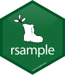
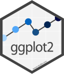

# Install the packages for the workshop
pkgs <-
c("almanac", "betacal", "bonsai", "brulee", "C50", "Cubist", "desirability2",
"dimRed", "earth", "embed", "extrasteps", "finetune", "igraph",
"important", "irlba", "kknn", "lightgbm", "lme4", "mirai", "parallelly",
"plumber", "probably", "RANN", "rpart", "RSpectra", "rules",
"splines2", "stacks", "text2vec", "textrecipes", "tidymodels",
"uwot", "vetiver")
install.packages(pkgs)1 - Introduction
Getting More Out of Feature Engineering and Tuning for Machine Learning
Welcome!
Wi-Fi network name
Posit Conf 2025
Wi-Fi password
conf2025
Venue information
There are gender neutral bathrooms located on floor LL2, next to Chicago A
A meditation/prayer room is located on floor LL2 in Chicago A
A lactation room is located on floor LL2 in Chicago B
Workshop policies
Please review the posit::conf code of conduct, which applies to all workshops: https://posit.co/code-of-conduct
CoC site has info on how to report a problem (in person, email, phone)
Please do not photograph people wearing red lanyards
Who are you?
You can use the magrittr
%>%or base R|>pipeYou are familiar with functions from dplyr, tidyr, ggplot2
You have exposure to basic statistical concepts
You do need intermediate familiarity with modeling or ML
You have used some tidymodels packages
You have some experience with evaluating statistical models using resampling techniques
Who are tidymodels?
- Simon Couch
- Hannah Frick
- Emil Hvitfeldt
- Max Kuhn
+ our TA today, Edgar Ruiz!
Many thanks to Davis Vaughan, Julia Silge, David Robinson, Julie Jung, Alison Hill, and Desirée De Leon for their role in creating these materials!
Asking for help
🟪 “I’m stuck and need help!”
🟩 “I finished the exercise”
Discord
- pos.it/conf-event-portal (login)
- Click on “Join Discord, the virtual networking platform!”
- Browse Channels ->
#workshop-feat-eng-tune
👀

👀

Tentative plan for this workshop
- Model optimization by tuning
- Grid search
- Racing
- Feature engineering with recipes
- Postprocessing
- Feature selection
Introduce yourself to your neighbors 👋
Getting the materials
If you are using Posit Cloud:
Log in to Posit Cloud (free): TODO-ADD-LATER
If you are working locally:
Let’s install some packages
If you are using your own laptop instead of Posit Cloud:
Also, you should make sure that you have installed the newest version of a few packages. To check this, you can run:
Let’s get started!
Load tidymodels 

We’re here to learn more about how to use the more advanced bits of tidymodels for supervised learning. Let’s load the meta-package:
library(tidymodels)
#> ── Attaching packages ──────────────────────────── tidymodels 1.4.1 ──
#> ✔ broom 1.0.9 ✔ rsample 1.3.1
#> ✔ dials 1.4.2 ✔ tailor 0.1.0.9000
#> ✔ dplyr 1.1.4 ✔ tidyr 1.3.1
#> ✔ infer 1.0.9 ✔ tune 2.0.0
#> ✔ modeldata 1.5.1 ✔ workflows 1.3.0
#> ✔ parsnip 1.3.3 ✔ workflowsets 1.1.1
#> ✔ purrr 1.1.0 ✔ yardstick 1.3.2
#> ✔ recipes 1.3.1
#> ── Conflicts ─────────────────────────────── tidymodels_conflicts() ──
#> ✖ purrr::discard() masks scales::discard()
#> ✖ dplyr::filter() masks stats::filter()
#> ✖ dplyr::lag() masks stats::lag()
#> ✖ recipes::step() masks stats::step()Resolve naming conflicts 
You might want to run this function to avoid function name conflicts:
To get more details, use the quiet = FALSE option.
Data sets
For illustration, we’ll use a few different data sets today:
class_data: a simulated set of data with a 1:10 class imbalance. Two classes, 30 predictors, and 2,000 data points.leaf_data: a real data set to identify plant species from their leaves. Thirty-two levels, 53 predictors, and 1,907 data points.hotel_data: a real data set for predicting the average cost per night. Numeric outcome, 27 predictors, and 15,402 data points.
Let’s get warmed up with the first data set.
Imbalanced data
These data can be loaded from the GitHub repo:
The outcome column is class with levels "event" and "no_event". Predictors are "predictor_01" to "predictor_30".
Your turn
Let’s warm up by taking 8 minutes to explore the data.
We’ll ask you to tell us something about these data that might be interesting for modeling.
08:00
A quick review of tidymodels
Data splitting 
One of our first tasks is to split our data into (at a minimum) a training set and a testing set. The rsample package has numerous functions for this, prefixed by initial_.
Let’s create a 3:1 split of the simulated data and use a stratified random sample (by class):
Data splitting 

Resampling
We’ll want to get accurate estimates of model performance.
Let’s use a resampling method to make multiple versions of our data (using 10-fold cross-validation).
For large amounts of data, a validation set is also a good alternative.

Resampling
set.seed(523)
sim_rs <- vfold_cv(sim_train, v = 10, strata = class)
sim_rs
#> # 10-fold cross-validation using stratification
#> # A tibble: 10 × 2
#> splits id
#> <list> <chr>
#> 1 <split [1348/151]> Fold01
#> 2 <split [1349/150]> Fold02
#> 3 <split [1349/150]> Fold03
#> 4 <split [1349/150]> Fold04
#> 5 <split [1349/150]> Fold05
#> 6 <split [1349/150]> Fold06
#> 7 <split [1349/150]> Fold07
#> 8 <split [1349/150]> Fold08
#> 9 <split [1350/149]> Fold09
#> 10 <split [1350/149]> Fold10Resampled data sets
model_data_1 <- sim_rs |> get_rsplit(1) |> analysis()
model_data_1 |> count(class)
#> # A tibble: 2 × 2
#> class n
#> <fct> <int>
#> 1 event 151
#> 2 no_event 1197
perf_data_1 <- sim_rs |> get_rsplit(1) |> assessment()
perf_data_1 |> count(class)
#> # A tibble: 2 × 2
#> class n
#> <fct> <int>
#> 1 event 17
#> 2 no_event 134Models via parsnip
Let’s fit a simple decision tree to the data:
# Specify what you want
tree_spec <- decision_tree(mode = "classification")
# Then train:
tree_fit <- tree_spec |> fit(class ~ ., data = model_data_1)
tree_fit
#> parsnip model object
#>
#> n= 1348
#>
#> node), split, n, loss, yval, (yprob)
#> * denotes terminal node
#>
#> 1) root 1348 151 no_event (0.11201780 0.88798220)
#> 2) predictor_27< -2.268929 76 11 event (0.85526316 0.14473684) *
#> 3) predictor_27>=-2.268929 1272 86 no_event (0.06761006 0.93238994)
#> 6) predictor_29>=2.144976 89 25 event (0.71910112 0.28089888)
#> 12) predictor_29>=2.599392 45 3 event (0.93333333 0.06666667) *
#> 13) predictor_29< 2.599392 44 22 event (0.50000000 0.50000000)
#> 26) predictor_18>=0.2344964 32 11 event (0.65625000 0.34375000)
#> 52) predictor_03< -0.2257182 16 1 event (0.93750000 0.06250000) *
#> 53) predictor_03>=-0.2257182 16 6 no_event (0.37500000 0.62500000) *
#> 27) predictor_18< 0.2344964 12 1 no_event (0.08333333 0.91666667) *
#> 7) predictor_29< 2.144976 1183 22 no_event (0.01859679 0.98140321) *Predicting…
predict(tree_fit, new_data = head(perf_data_1, 4))
#> # A tibble: 4 × 1
#> .pred_class
#> <fct>
#> 1 event
#> 2 event
#> 3 event
#> 4 no_event
predict(tree_fit, new_data = head(perf_data_1, 4), type = "prob")
#> # A tibble: 4 × 2
#> .pred_event .pred_no_event
#> <dbl> <dbl>
#> 1 0.855 0.145
#> 2 0.933 0.0667
#> 3 0.855 0.145
#> 4 0.0833 0.917Augmenting…
tree_pred <- augment(tree_fit, new_data = perf_data_1)
tree_pred |> slice(1:5)
#> # A tibble: 5 × 34
#> .pred_class .pred_event .pred_no_event class predictor_01 predictor_02
#> <fct> <dbl> <dbl> <fct> <dbl> <dbl>
#> 1 event 0.855 0.145 event -1.64 -1.74
#> 2 event 0.933 0.0667 event -0.846 0.477
#> 3 event 0.855 0.145 event 0.551 0.00571
#> 4 no_event 0.0833 0.917 event -1.46 -0.335
#> 5 event 0.855 0.145 event -0.194 -0.276
#> # ℹ 28 more variables: predictor_03 <dbl>, predictor_04 <dbl>,
#> # predictor_05 <dbl>, predictor_06 <dbl>, predictor_07 <dbl>,
#> # predictor_08 <dbl>, predictor_09 <dbl>, predictor_10 <dbl>,
#> # predictor_11 <dbl>, predictor_12 <dbl>, predictor_13 <dbl>,
#> # predictor_14 <dbl>, predictor_15 <dbl>, predictor_16 <dbl>,
#> # predictor_17 <dbl>, predictor_18 <dbl>, predictor_19 <dbl>,
#> # predictor_20 <dbl>, predictor_21 <dbl>, predictor_22 <dbl>, …Performance metrics
There are many yardstick metrics* for class predictions and probability estimates.
Let’s make a collection of metrics and then evaluate our model.
cls_metrics <- metric_set(brier_class, roc_auc, sensitivity, specificity)
tree_pred |> cls_metrics(truth = class, estimate = .pred_class, .pred_event)
#> # A tibble: 4 × 3
#> .metric .estimator .estimate
#> <chr> <chr> <dbl>
#> 1 sensitivity binary 0.647
#> 2 specificity binary 0.985
#> 3 brier_class binary 0.0429
#> 4 roc_auc binary 0.899* … and metrics for regression and others.
Recipes and workflows
Recipes are preprocessors that perform sequential operations on the predictors.
For example, to center and scale our predictors:
Your turn
Fit a different type of decision tree, this time:
- Using the
C5.0engine - Change the minimum number of samples required for splitting to 10.
Did performance change much?
05:00
Our versions
R version 4.5.1 (2025-06-13), Quarto (1.7.32)
| package | version |
|---|---|
| almanac | 1.0.0 |
| betacal | 0.1.0 |
| bonsai | 0.4.0 |
| broom | 1.0.9 |
| brulee | 0.5.0 |
| C50 | 0.2.0 |
| Cubist | 0.5.0 |
| CVST | 0.2-3 |
| desirability2 | 0.2.0 |
| dials | 1.4.2 |
| dimRed | 0.2.7 |
| dplyr | 1.1.4 |
| DRR | 0.0.4 |
| earth | 5.3.4 |
| embed | 1.2.0 |
| package | version |
|---|---|
| extrasteps | 0.3.0 |
| finetune | 1.2.1 |
| forested | 0.2.0 |
| Formula | 1.2-5 |
| ggplot2 | 3.5.2 |
| igraph | 2.1.4 |
| important | 0.2.0 |
| irlba | 2.3.5.1 |
| kernlab | 0.9-33 |
| kknn | 1.4.1 |
| lattice | 0.22-7 |
| lightgbm | 4.6.0 |
| lme4 | 1.1-37 |
| mirai | 2.5.0 |
| modeldata | 1.5.1 |
| package | version |
|---|---|
| parallelly | 1.45.1 |
| parsnip | 1.3.3 |
| plotmo | 3.6.4 |
| plotrix | 3.8-4 |
| plumber | 1.3.0 |
| probably | 1.1.1 |
| purrr | 1.1.0 |
| RANN | 2.6.2 |
| recipes | 1.3.1 |
| rpart | 4.1.24 |
| rsample | 1.3.1 |
| RSpectra | 0.16-2 |
| rules | 1.0.2 |
| scales | 1.4.0 |
| splines2 | 0.5.4 |
| package | version |
|---|---|
| stacks | 1.1.1.9001 |
| tailor | 0.1.0.9000 |
| text2vec | 0.6.4 |
| textrecipes | 1.1.0 |
| tidymodels | 1.4.1 |
| tidyr | 1.3.1 |
| tune | 2.0.0 |
| uwot | 0.2.3 |
| vetiver | 0.2.5 |
| workflows | 1.3.0 |
| workflowsets | 1.1.1 |
| yardstick | 1.3.2 |